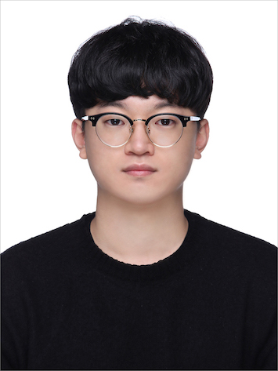

WACV
2026
Eye-for-an-eye: Appearance Transfer with Dense Semantic Correspondence in Diffusion Models
IEEE/CVF Winter Conference on Applications of Computer Vision (WACV), 2026
Ph.D. Student in Artificial Intelligence
Yonsei University, Seoul, South Korea
I am a Ph.D. student at Yonsei University, working with Prof. Youngjung Uh in the Visual Intelligence Lab. My research interests lie in computer vision and generative modeling, particularly video generation, diffusion models, and controllable world models.
I'm interested in making generative models more efficient and in understanding how visual scenes evolve under motion and interaction.

I am broadly interested in generative AI and computer vision. My current research interests include efficient inference and training for video diffusion models, controllable visual generation, and interaction-aware world modeling.
Selected peer-reviewed papers. My name is shown in bold.
IEEE/CVF Winter Conference on Applications of Computer Vision (WACV), 2026
Advances in Neural Information Processing Systems (NeurIPS), 2023
* Equal contribution.
Integrated M.S./Ph.D. Program in Artificial Intelligence
B.S. in Electrical and Electronic Engineering
Undergraduate Research Intern